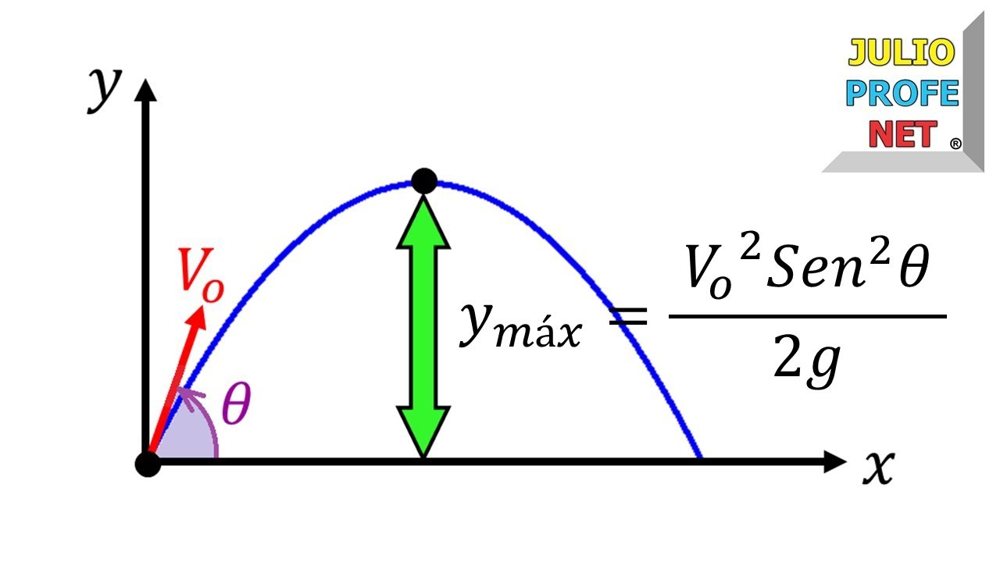
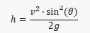
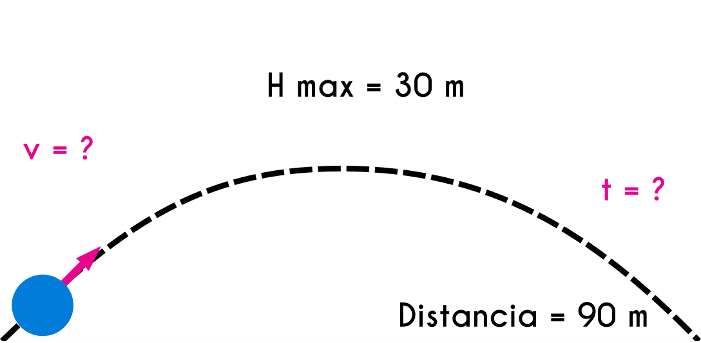
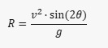
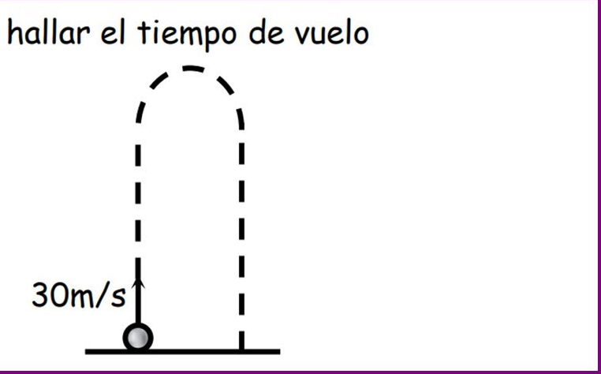
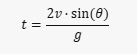

El movimiento parabólico es el desplazamiento realizado por cualquier objeto cuya trayectoria describe una parábola, el cual corresponde con la trayectoria ideal de un proyectil que se mueve en un medio que presenta mínimos de resistencia durante su avance y que está sujeto a un campo gravitatorio ambos de tipo uniforme.
El tiro parabólico es un tipo de movimiento que realiza un objeto cuando es lanzado al aire en un ángulo. Este movimiento se caracteriza por la combinación de un movimiento uniforme en la dirección horizontal (eje x) y un movimiento uniformemente acelerado en la dirección vertical (eje y). En ausencia de resistencia del aire, la trayectoria que sigue el objeto es una parábola, de ahí el nombre de “tiro parabólico”.
Las fórmulas para calcular diferentes aspectos del tiro parabólico son las siguientes:
La altura máxima que alcanza el objeto se puede calcular con la fórmula
 El alcance máximo, o la distancia horizontal que recorre el objeto, se puede calcular con la fórmula
 El tiempo total que el objeto pasa en el aire se puede calcular con la fórmula
 